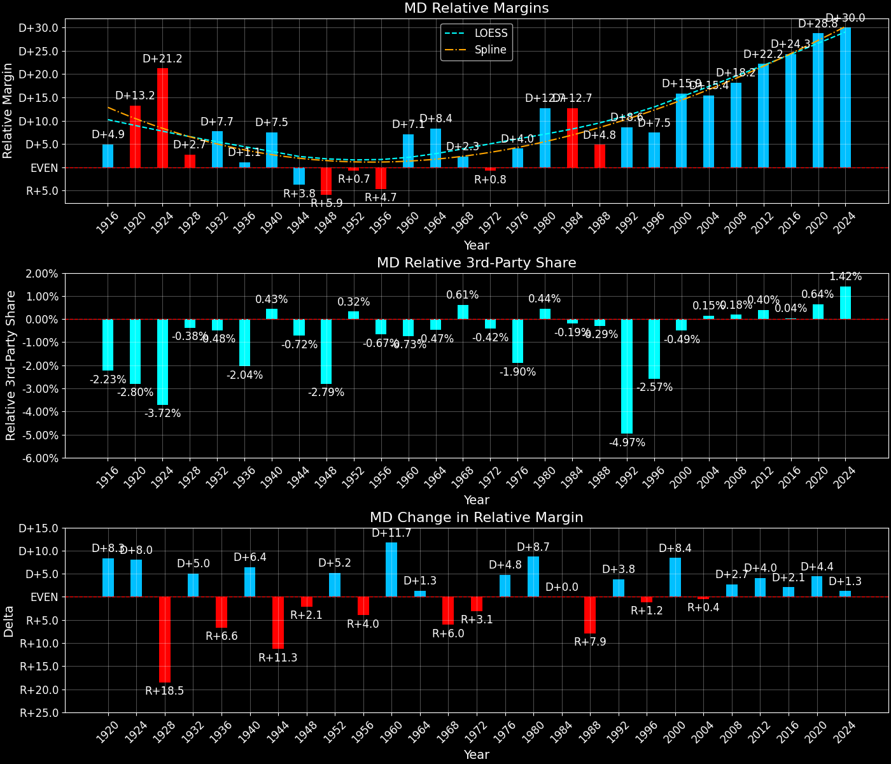

Maryland (MD) — Statewide

Margins · 3P share · Pres. deltas

Relative margins · Relative 3P · Rel. deltas
Maryland (MD) — Total Data
| Year | EVs | D | R | Margin | Rel. Margin | Nat. Margin | Margin Δ | Rel. Margin Δ | Nat. Margin Δ | Total votes |
|---|---|---|---|---|---|---|---|---|---|---|
| 1968 | 10 | 533,583(43.6%) | 512,367(41.9%) | D+1.7 | D+2.3 | R+0.6 | 1,223,900 | |||
| 1972 | 10 | 505,781(37.9%) | 829,305(62.1%) | R+24.2 | R+0.7 | R+23.5 | R+26.0 | R+3.0 | R+23.0 | 1,335,086 |
| 1976 | 10 | 759,608(53.0%) | 672,661(47.0%) | D+6.1 | D+3.9 | D+2.2 | D+30.3 | D+4.6 | D+25.7 | 1,432,269 |
| 1980 | 10 | 726,161(47.1%) | 680,606(44.2%) | D+3.0 | D+12.9 | R+9.9 | R+3.1 | D+9.0 | R+12.1 | 1,540,496 |
| 1984 | 10 | 787,935(47.0%) | 879,918(52.5%) | R+5.5 | D+12.6 | R+18.1 | R+8.4 | R+0.2 | R+8.2 | 1,675,873 |
| 1988 | 10 | 826,304(48.2%) | 876,167(51.1%) | R+2.9 | D+4.8 | R+7.7 | D+2.6 | R+7.8 | D+10.4 | 1,714,358 |
| 1992 | 10 | 988,571(49.8%) | 707,094(35.6%) | D+14.2 | D+8.6 | D+5.6 | D+17.1 | D+3.8 | D+13.3 | 1,984,653 |
| 1996 | 10 | 966,208(54.8%) | 681,530(38.6%) | D+16.1 | D+7.6 | D+8.6 | D+2.0 | R+1.0 | D+3.0 | 1,763,550 |
| 2000 | 10 | 1,144,008(56.6%) | 813,827(40.2%) | D+16.3 | D+15.8 | D+0.5 | D+0.2 | D+8.2 | R+8.0 | 2,022,194 |
| 2004 | 10 | 1,334,487(56.0%) | 1,024,693(43.0%) | D+13.0 | D+15.5 | R+2.5 | R+3.3 | R+0.4 | R+3.0 | 2,384,180 |
| 2008 | 10 | 1,629,467(61.9%) | 959,862(36.5%) | D+25.4 | D+18.2 | D+7.3 | D+12.5 | D+2.7 | D+9.7 | 2,631,596 |
| 2012 | 10 | 1,677,844(62.2%) | 971,869(36.0%) | D+26.2 | D+22.3 | D+3.9 | D+0.7 | D+4.1 | R+3.4 | 2,697,018 |
| 2016 | 10 | 1,677,928(61.3%) | 943,169(34.5%) | D+26.8 | D+24.7 | D+2.1 | D+0.7 | D+2.4 | R+1.8 | 2,736,649 |
| 2020 | 10 | 1,985,023(65.4%) | 976,414(32.2%) | D+33.2 | D+28.8 | D+4.4 | D+6.4 | D+4.0 | D+2.3 | 3,037,031 |
| 2024 | 10 | 1,902,577(62.6%) | 1,035,550(34.1%) | D+28.5 | D+30.1 | R+1.5 | R+4.7 | D+1.3 | R+6.0 | 3,038,334 |
Column explanations
- Year
- Election year.
- EVs
- Number of electoral votes allocated to this state or unit.
- D
- Number of votes for the Democratic candidate (raw count(pct%)).
- R
- Number of votes for the Republican candidate (raw count(pct%)).
- Margin
- Margin between the two major-party candidates, including third-party votes ((D - R)/total).
- Rel. Margin
- The presidential margin relative to the national presidential margin (Margin - Nat. Margin).
- Nat. Margin
- The national presidential margin for that year, including third-party votes ((D_total - R_total)/total_votes).
- Δ
- Change (delta) in the value from the previous election year. Blank if no data for previous year.
- Total votes
- Total voter turnout or ballots cast (when provided).
Maryland (MD) — Third-Party Data
| Year | Other votes | 3P Share | 3P Nat. Share | 3P Rel. Share |
|---|---|---|---|---|
| 1968 | 177,950(14.5%) | T+14.5 | T+13.6 | T+1.0 |
| 1972 | 0(0.0%) | T+0.1 | T-0.1 | |
| 1976 | 0(0.0%) | T+0.3 | T-0.3 | |
| 1980 | 133,729(8.7%) | T+8.7 | T+7.0 | T+1.7 |
| 1984 | 8,020(0.5%) | T+0.5 | T+0.1 | T+0.4 |
| 1988 | 11,887(0.7%) | T+0.7 | T+0.2 | T+0.5 |
| 1992 | 288,988(14.6%) | T+14.6 | T+19.2 | T-4.7 |
| 1996 | 115,812(6.6%) | T+6.6 | T+9.7 | T-3.1 |
| 2000 | 64,359(3.2%) | T+3.2 | T+3.7 | T-0.5 |
| 2004 | 25,000(1.0%) | T+1.0 | T+0.8 | T+0.2 |
| 2008 | 42,267(1.6%) | T+1.6 | T+1.4 | T+0.2 |
| 2012 | 47,305(1.8%) | T+1.8 | T+1.6 | T+0.1 |
| 2016 | 115,552(4.2%) | T+4.2 | T+5.5 | T-1.3 |
| 2020 | 75,594(2.5%) | T+2.5 | T+1.8 | T+0.6 |
| 2024 | 100,207(3.3%) | T+3.3 | T+1.9 | T+1.4 |
Column explanations
- Year
- Election year.
- Other votes
- Number of votes for third-party (other) candidates (raw count(pct%)).
- 3P Share
- Share of the vote received by third-party (other) candidates.
- 3P Nat. Share
- The national third-party share for that year (3P votes / total votes).
- 3P Rel. Share
- Third-party share relative to the national third-party share (3P share - Nat. 3P share).

Two-party margins · relative · deltas
Maryland (MD) — Two-Party Data
| Year | 2-Party Margin | 2-Party Nat. Margin | 2-Party Rel. Margin | 2-Party Margin Δ | 2-Party Nat. Margin Δ | 2-Party Rel. Margin Δ |
|---|---|---|---|---|---|---|
| 1968 | D+2.0 | R+0.7 | D+2.7 | |||
| 1972 | R+24.2 | R+23.6 | R+0.7 | R+26.3 | R+22.9 | R+3.4 |
| 1976 | D+6.1 | D+2.2 | D+3.9 | D+30.3 | D+25.8 | D+4.5 |
| 1980 | D+3.2 | R+10.6 | D+13.9 | R+2.8 | R+12.8 | D+10.0 |
| 1984 | R+5.5 | R+18.1 | D+12.6 | R+8.8 | R+7.5 | R+1.3 |
| 1988 | R+2.9 | R+7.8 | D+4.8 | D+2.6 | D+10.4 | R+7.8 |
| 1992 | D+16.6 | D+6.9 | D+9.7 | D+19.5 | D+14.7 | D+4.9 |
| 1996 | D+17.3 | D+9.5 | D+7.8 | D+0.7 | D+2.6 | R+1.9 |
| 2000 | D+16.9 | D+0.5 | D+16.3 | R+0.4 | R+8.9 | D+8.5 |
| 2004 | D+13.1 | R+2.5 | D+15.6 | R+3.7 | R+3.0 | R+0.7 |
| 2008 | D+25.9 | D+7.4 | D+18.5 | D+12.7 | D+9.8 | D+2.9 |
| 2012 | D+26.6 | D+3.9 | D+22.7 | D+0.8 | R+3.4 | D+4.2 |
| 2016 | D+28.0 | D+2.2 | D+25.8 | D+1.4 | R+1.7 | D+3.1 |
| 2020 | D+34.1 | D+4.5 | D+29.5 | D+6.0 | D+2.3 | D+3.7 |
| 2024 | D+29.5 | R+1.6 | D+31.1 | R+4.5 | R+6.1 | D+1.6 |
Column explanations
- Year
- Election year.
- 2-Party Margin
- Margin between the two major-party candidates, ignoring third-party votes ((D - R)/(D + R)).
- 2-Party Nat. Margin
- The national presidential margin for that year, including third-party votes ((D_total - R_total)/total_votes).
- 2-Party Rel. Margin
- The presidential margin relative to the national presidential margin (Margin - Nat. Margin).
- Δ
- Change (delta) in the value from the previous election year. Blank if no data for previous year.